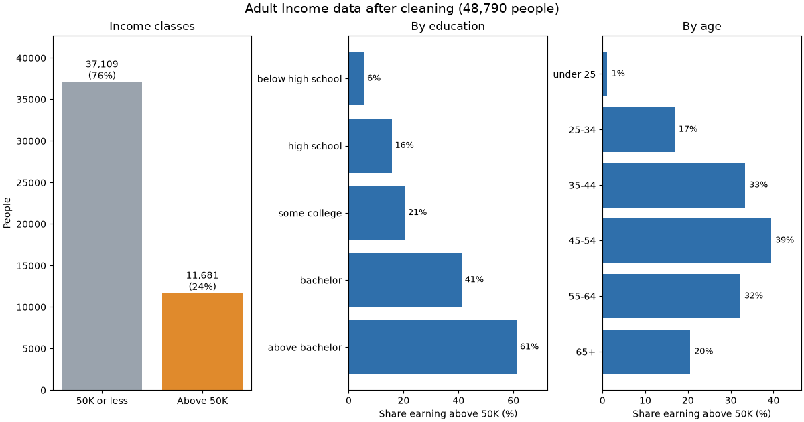
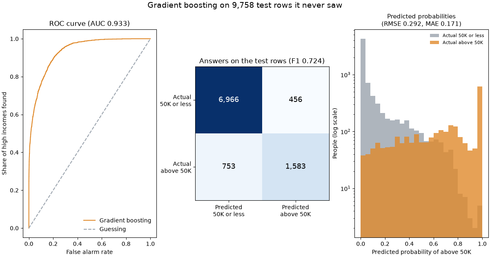

Tabular Prediction with Exploratory Analysis
Predicts whether a person earns above 50K from census data, with three models compared by cross-validation and an error analysis.
Pending quality review
Problem
Given census answers about a person (age, education, occupation, hours worked and others), predict whether their yearly income is above 50,000 dollars. The aim was the complete workflow for a standard prediction problem, where one command reproduces every number, and not the highest possible score.
The data is the Adult dataset from the UCI Machine Learning Repository (1994 United States census, CC BY 4.0): 48,790 people after cleaning, of whom 24% earn above 50K.

Approach
- Explore the raw data in a notebook to see what must be cleaned and which columns relate to income.
- Clean: trim text, turn
?into missing values, read the two spellings of the target, and drop duplicate rows. - Engineer features in a scikit-learn
ColumnTransformerthat sits inside each model's pipeline, so nothing is learned from the rows a model is checked on. - Compare a baseline and three models (logistic regression, random forest, gradient boosting) with 5-fold cross-validation.
- Test the best model once, on rows set aside at the start, and look at where it is wrong.
Tech stack
- Python, Pandas and scikit-learn for the data and the models.
- Matplotlib for the figures, and a Jupyter notebook for the exploration.
pytestandruff; the tests use a small made-up table and no network.- Docker as a second way to run the training.
Challenges and solutions
- Unbalanced classes. Always answering "50K or less" is right 76% of the time, so accuracy alone says little. The project reports F1, ROC AUC, RMSE and MAE next to a baseline, and explains what each one hides.
- Reproducibility. A fixed seed, pinned library versions and a limit on threads make the same command write the same metrics file every time. A test checks this.
- A light run. Everything trains in about 40 seconds on a 2-core laptop, with near-default settings and no tuning. Heavier settings live in one configuration file for a later run on a stronger machine.
Results
Gradient boosting was best in cross-validation on six of seven metrics.

On 9,758 test rows the model never saw:
| Metric | Gradient boosting | Baseline |
|---|---|---|
| F1 | 0.724 | 0.000 |
| ROC AUC | 0.933 | 0.500 |
| RMSE (of the probability) | 0.292 | 0.427 |
| MAE (of the probability) | 0.171 | 0.364 |
| Accuracy | 0.876 | 0.761 |

The model misses a high income (32% of them) far more often than it raises a false alarm (6%). The misses are not spread evenly: 43% of high-earning women are missed against 30% of men. The data is from 1994 and includes sex and race, so this model is an exercise and must not be used for decisions about people.
What I learned
This section will be written after the project passes its quality review.